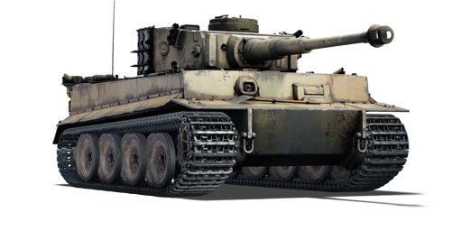
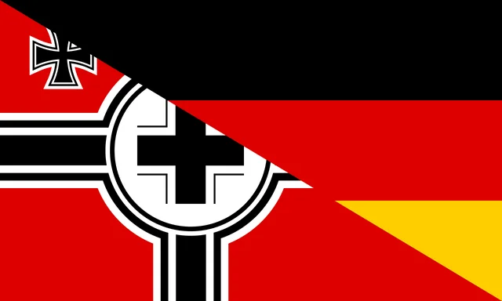

Tiger H1
Nombre
Nacionalidad
Alemania
Tanque Pesado
Rol
The Panzerkampfwagen VI Ausführung H1 (Tiger H1) is the first (early-production) variant
of the Tiger I heavy tank family, designed and built by Henschel and used by the German Army
during World War II. It offered the German Army its first armoured fighting vehicle equipped
with the 88 mm Kampfwagenkanone (KwK) 36 tank gun, developed from the 88 mm Flugabwehrkanone
(FlaK) 36 anti-aircraft gun. Henschel and Ferdinand Porsche were ordered on May 26, 1941, to
submit proposals for a 45-ton heavy tank that would be available by June 1942